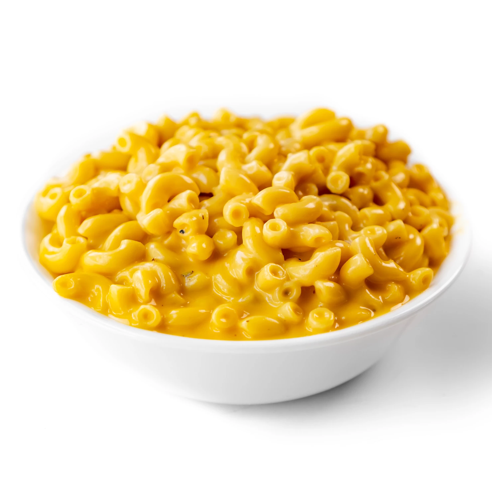

15-minute Vegan Mac & Cheese
from Thee Burger Dude

Description
Super creamy vegan macaroni and cheese with minimal time and
ingredients required. The trick is to boil the pasta with
minimal water so that the starchy pasta water can act as
an emulsifier for the cheesy sauce.
Ingredients
- 8 oz. elbow macaroni
- 2 tbsp vegan butter
- 1 cup unsweetened plant milk
- 8 oz. vegan cheese shreds
- Salt, pepper, garlic powder to taste
Steps
- Boil about 2 cups of water in a kettle. Add dried pasta to a saucepan. Cover the pasta in the
boiling water (use more or less as needed to just cover it). Throw in a good pinch of salt
and then bring the water to a boil. Stir occasionally to keep the pasta
from sticking.
- Once the water is boiling, lower the heat and cook until al dente and most of the water
has evaporated (about 6 minutes).
- Add in vegan butter and plant milk, stir until melted, and then add in the vegan
cheese shreds and stir those until melted.
- Season to taste and serve immediately!